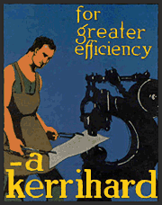

Trip hammers and other power forging hammers played an important part in American
blacksmithing. Perhaps the most common trip hammer seen today is the Little Giant Trip Hammer
and is sought-after by the artist-blacksmith. There were many makers of power hammers and some of the hammers were
real giants.

While the information for this page is being organized, there is a very worthy book that covers the subject:
Pounding Out the Profits; A Century of American Invention, “The Developement and
Manufacture of Crank-actuated Open-die Power Forging Hammers” by Douglas Freund . See the book review on
Anvilfire.com. The Kerrihard advertisement is
from the cover of the book.